Unofficial study solution; not an official GTU answer key. Answers have not been independently verified. English text reflows; source equations, diagrams and Gujarati retain their original appearance. Use Enlarge image to inspect them.
આ બિનસત્તાવાર અભ્યાસ ઉકેલ છે, સત્તાવાર GTU જવાબવહી નથી. PDF માંથી ગુજરાતી લખાણ સાચું નીકળતું નથી, તેથી દરેક જવાબ મૂળ ચિત્રરૂપે જાળવ્યો છે. વાંચવા માટે ચિત્ર મોટું કરો. મૂળ પ્રશ્ન અને પરીક્ષાના વિકલ્પોની સૂચનાઓ અનુસરો.
Coverage: all five questions and every printed OR alternative are answered: 28 parts. The authentic English questions are retained in both language views; answers are in English and Gujarati. Diagrams are schematic and not to scale.
Printed instructions: attempt all questions; make suitable assumptions; figures on the right indicate full marks; simple and non-programmable scientific calculators are permitted; the English version is authentic.
Printed terminology: “See-back” is explained as Seebeck; “vortex Shredding” is explained using vortex shedding. The original wording is retained in each question.
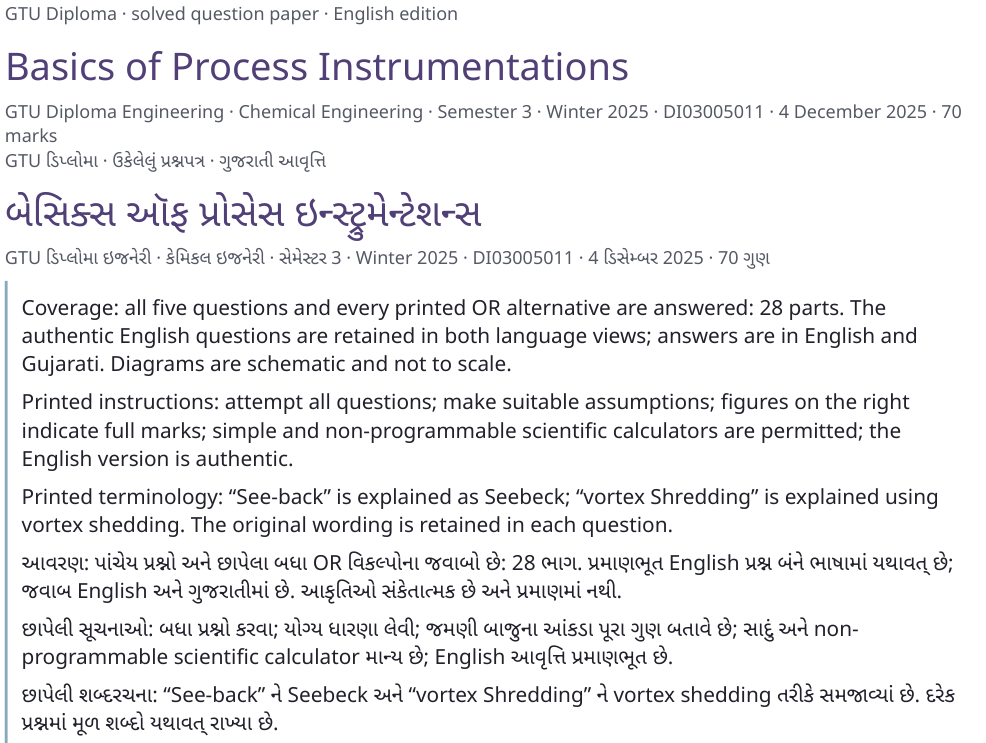
Question 1
Q1 · Instrument fundamentals
Q.1 (a) · Classify instruments in chemical plant. · 3 marks
Instruments can be classified by their function in a chemical plant:
• Indicating: show the current value, e.g. a pressure gauge.
• Recording: store the value against time, e.g. a temperature recorder.
• Controlling: compare the measurement with a set point and act on a valve, e.g. a temperature controller.
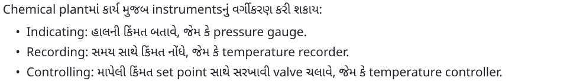
Q.1 (b) · Explain importance of instruments in chemical plant. · 4 marks
Instrumentation measures process variables and helps operators monitor and control a chemical plant.
• Temperature, pressure, flow and level measurements keep operation near desired conditions.
• Alarms and independent protective systems help detect dangerous deviations; they do not remove every hazard.
• Trend records support product quality, material and energy efficiency, troubleshooting and maintenance.
• Example: a reactor temperature sensor signals a controller to adjust cooling.
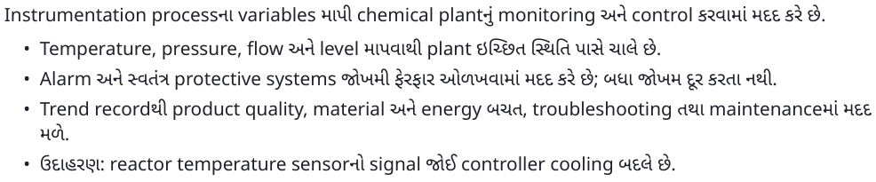
Q.1 (c) · Describe basic elements of instruments. · 7 marks
Measurand is the quantity to be measured. The instrument chain converts it into a useful indication.
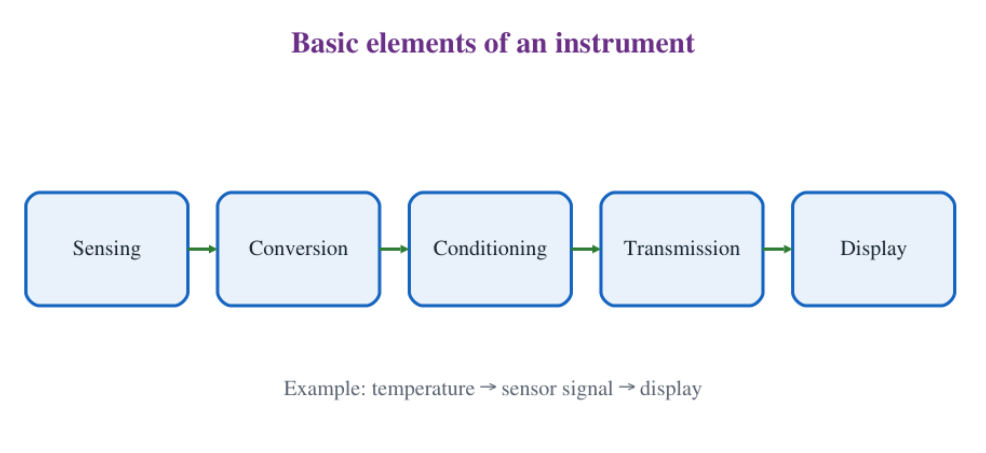
Schematic diagram, not to scale.
• Primary sensing element first responds to the quantity: a bulb responds to temperature.
• Variable conversion or transducer converts that response into a convenient signal, for example temperature to resistance.
• Signal manipulation / conditioning amplifies, filters or scales the signal without changing its information.
• Transmission carries the signal to a remote point; presentation indicates, records or supplies it to a controller.
• Example: RTD → conditioning/transmitter → cable → temperature display. Not every instrument has a separate physical unit for every function.
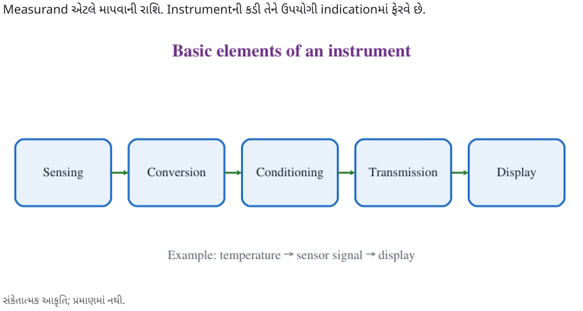
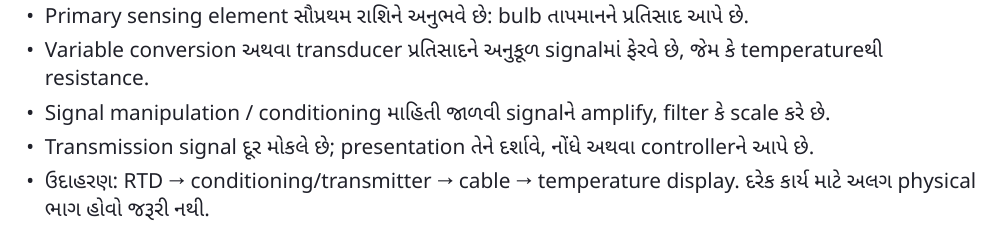
Q.1 (c) · List out various static characteristics and explain any two in details. · OR · 7 marks
Static characteristics describe an instrument after its output has settled at a constant input.
Common characteristics: range, span, accuracy, precision, sensitivity, linearity, resolution, hysteresis, repeatability, dead band and drift.
Two characteristics in detail
1. Accuracy: closeness to the reference value. Error = indicated − reference. For a 0–10 bar range, 5.10 bar indicated at a 5.00 bar reference is +0.10 bar or +1.0% of span.
2. Precision / repeatability: closeness of repeated readings under specified unchanged conditions. Readings 5.10, 5.10 and 5.11 bar are repeatable, but can still be inaccurate relative to 5.00 bar.
Specify units, reference, conditions and whether accuracy is % of reading or % of full-scale span.
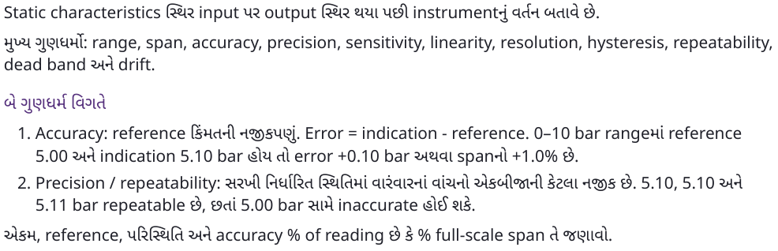
Question 2
Q2 · Temperature and humidity
Q.2 (a) · Draw various temperature scale with two fixed point. · 3 marks
Temperature scales use different zero points and divisions. The water fixed points below apply at 1 atm.
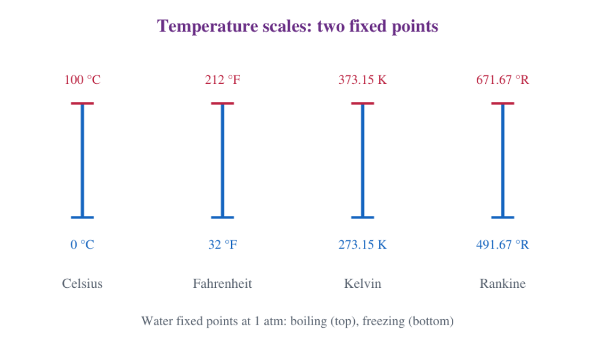
Freezing and boiling of water are shown as the two fixed points.
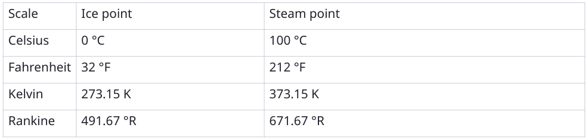
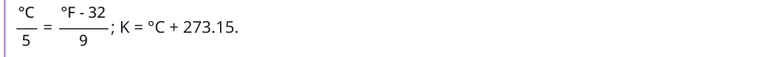
Example: 20 °C = 68 °F = 293.15 K. Kelvin and Rankine are absolute scales.
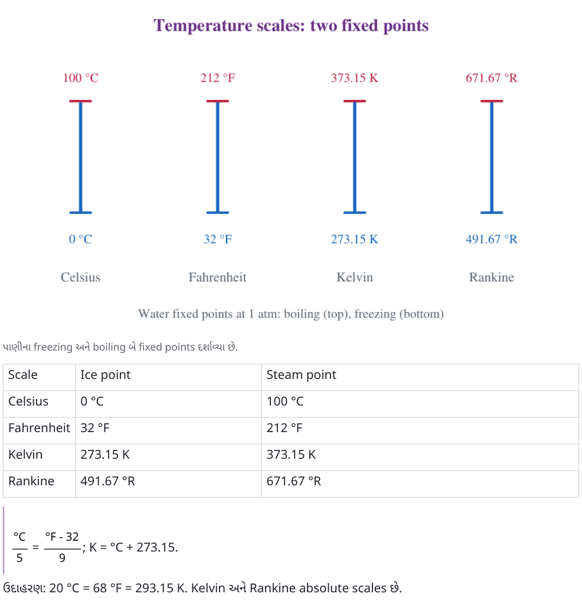
Q.2 (b) · Write Principle and Construction of radiation pyrometer. · 4 marks
Principle: A radiation pyrometer determines the temperature of a viewed surface from its thermal radiation without contact. For a grey surface, emitted radiation depends on emissivity and absolute temperature.
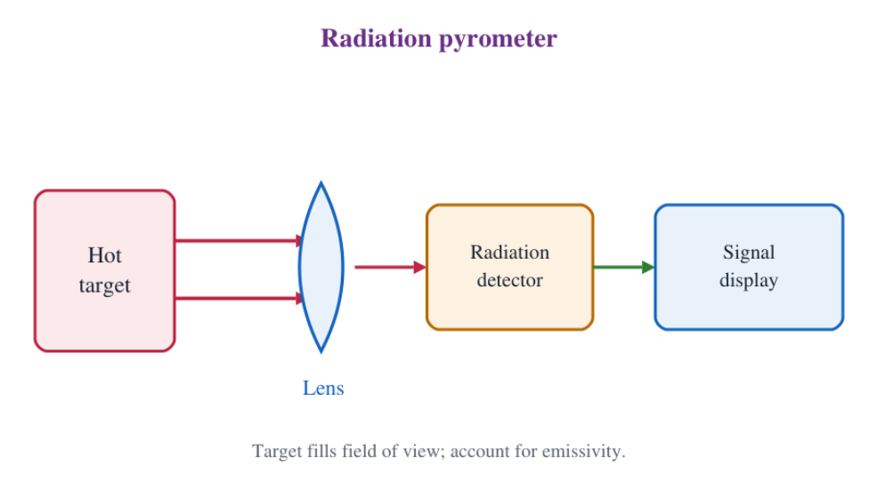
Schematic diagram, not to scale.
• Construction: A lens or mirror collects radiation from the target and focuses it on a detector; signal conditioning, emissivity setting and a calibrated display give a temperature indication.
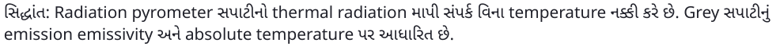
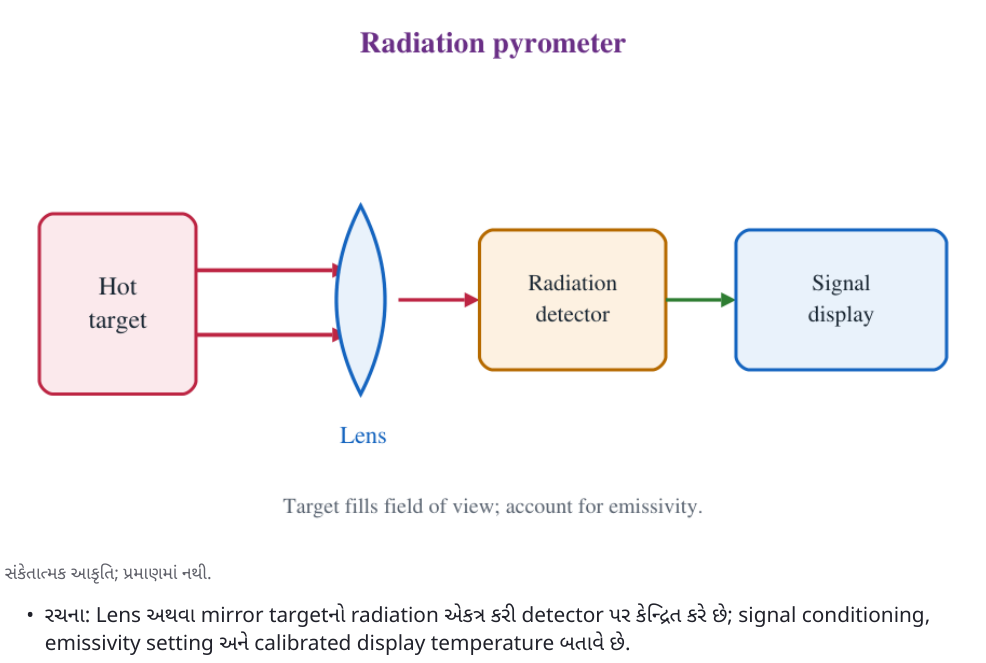
Q.2 (c) · Describe See-back, Peltier and Thomson effect. · 7 marks
Seebeck effect: a circuit made of two dissimilar conductors with junctions at different temperatures develops a thermoelectric emf; this is the basis of a thermocouple. For a small temperature range, emf is approximately the Seebeck coefficient times the junction-temperature difference. A thermocouple uses this effect to measure temperature.
Peltier effect: current crossing a junction of dissimilar conductors causes reversible heat absorption or release at that junction. Heat rate depends on current and the material pair; reversing current reverses the heat direction. Thermoelectric cooling modules use this effect.
Thomson effect: reversible heat is absorbed or released when current flows through one homogeneous conductor with a temperature gradient; its direction depends on material and current direction. Unlike Peltier heat at a junction, Thomson heat is distributed along the conductor where the gradient and current coexist. Reversing current reverses this heat exchange.
The printed “See-back” refers to the Seebeck effect. Thomson and Peltier heat are reversible, unlike ordinary Joule heating.
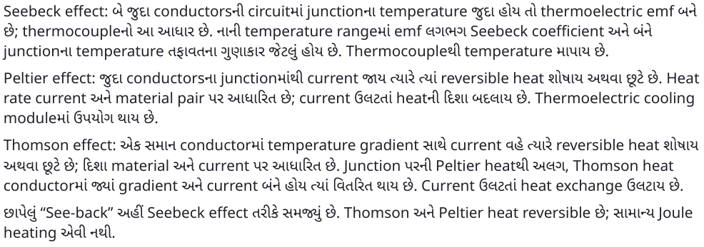
Q.2 (a) · Draw neat and clean humidity measurement hair hygrometer. · OR · 3 marks
A hair hygrometer uses the change in length of prepared hair with relative humidity.
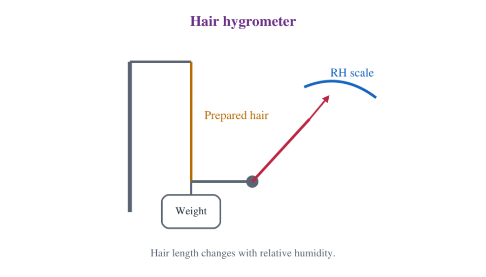
Schematic diagram, not to scale.
• The hair, tension weight, lever, pointer and RH scale are shown in the schematic.
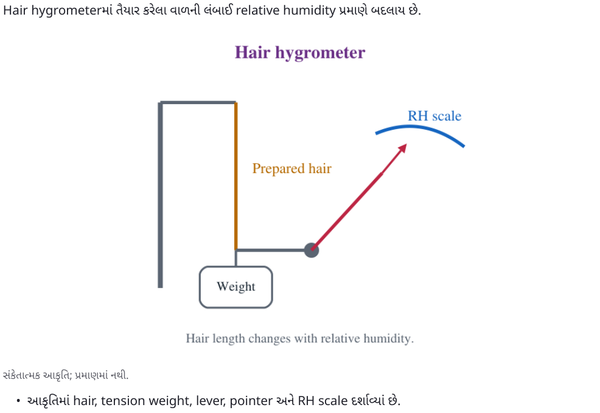
Q.2 (b) · Write Principle and Construction of optical pyrometer. · OR · 4 marks
Principle: A disappearing-filament optical pyrometer compares the brightness of a target with a calibrated lamp filament at a selected wavelength.
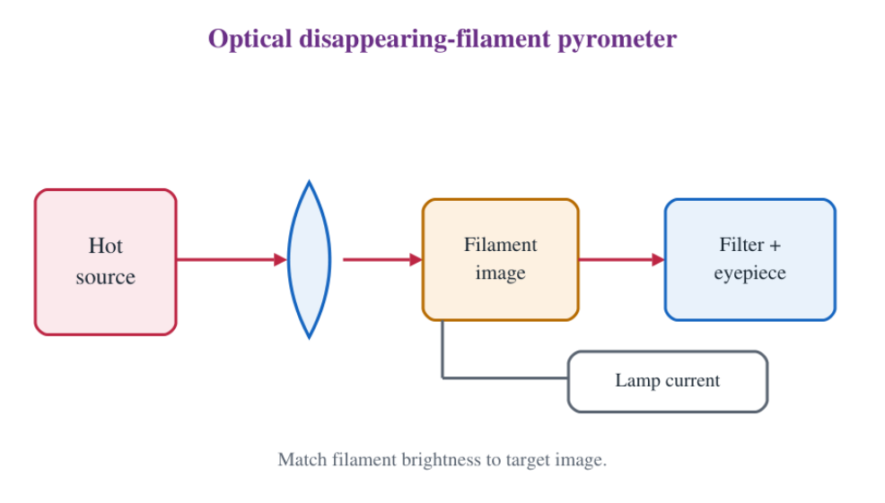
Schematic diagram, not to scale.
• Construction: An objective lens forms the target image; a filament lamp, red filter and eyepiece allow comparison. A variable lamp-current supply and calibrated meter indicate brightness temperature.
• Emissivity and the optical path affect the relationship between brightness and true surface temperature.
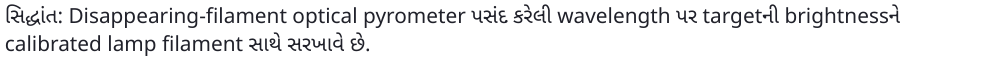
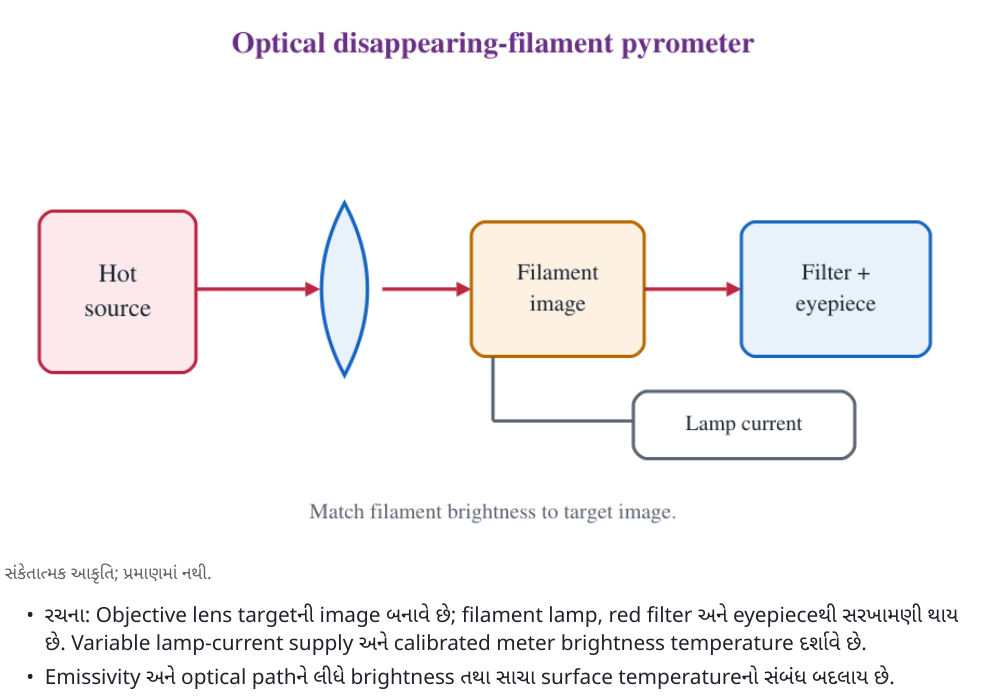
Q.2 (c) · Write principle, construction and working of mercury in glass thermometer. · OR · 7 marks
Principle: Mercury expands more than the glass envelope over the usable range; the narrow bore converts volume change into a readable column movement.
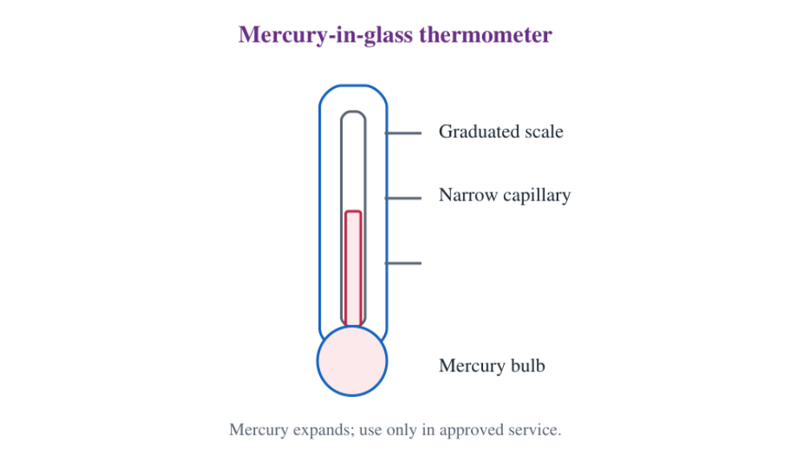
Schematic; not to scale.
Construction — part and purpose
1. Glass bulb contains the mercury and contacts the measured medium.
2. Fine sealed capillary and graduated scale convert expansion to an indicated temperature.
3. A protective case or thermowell may be used for industrial service.
Working — step and reason
1. Place the bulb at the required immersion depth and allow thermal equilibrium.
2. A temperature rise expands mercury and raises the column; cooling lowers it.
3. Read the meniscus at eye level on the calibrated scale.
Fragile glass, lag and immersion errors limit use. Mercury is toxic: use safer alternatives where required and follow spill procedures.
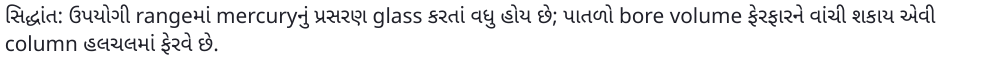
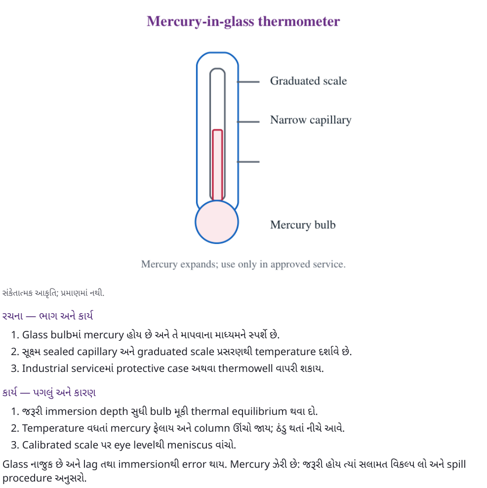
Question 3
Q3 · Viscosity and pressure
Q.3 (a) · Draw neat and clean rotating cylinder for viscosity measurement. · 3 marks
A rotating-cylinder viscometer has a driven cylinder, liquid-filled cup and torque measurement.
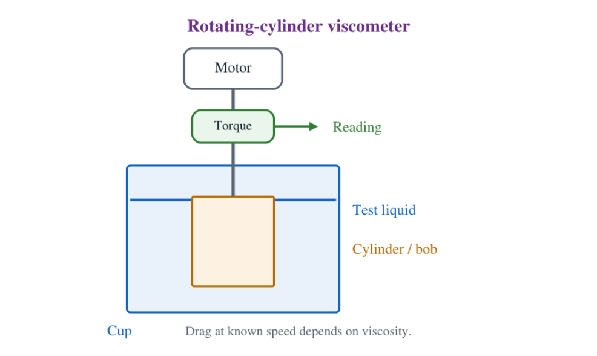
Schematic diagram, not to scale.
• At a known speed, viscous drag produces torque; temperature and geometry must be specified.
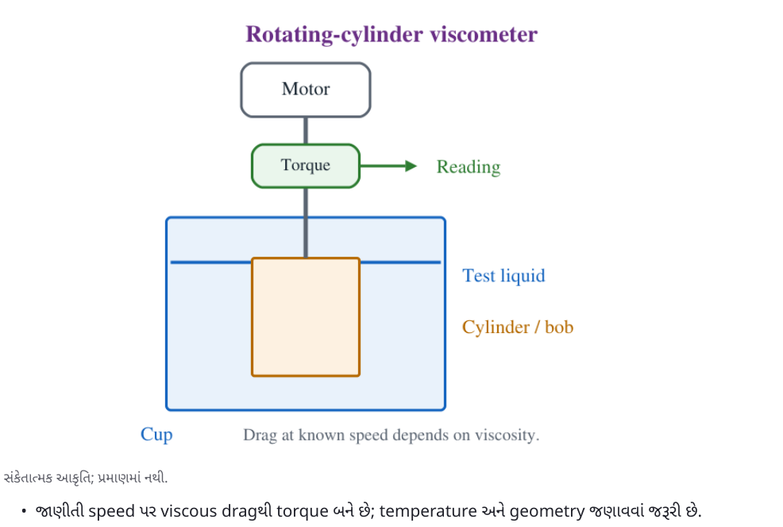
Q.3 (b) · Explain differential pressure gauge. · 4 marks
A differential pressure gauge indicates ΔP = Phigh − Plow rather than either absolute pressure alone.
• Two pressure ports act on opposite sides of a diaphragm, bellows or manometer; the differential produces movement or a liquid-height difference.
• A calibrated indicator reads the difference. It is used across filters and flow restrictions; respect the maximum static and differential pressure ratings.
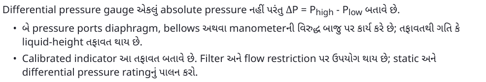
Q.3 (c) · Write principle, construction and working of bourdon tube pressure gauge · 7 marks
Principle: Internal pressure causes a curved hollow elastic tube of flattened cross-section to tend to straighten.
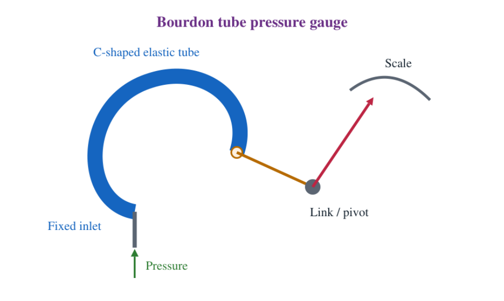
Schematic; not to scale.
Construction — part and purpose
1. A C-shaped metal tube has a fixed inlet socket and a sealed free tip.
2. A link, sector gear and pinion amplify free-tip motion.
3. A pointer moves over a calibrated pressure dial.
Working — step and reason
1. Pressure enters through the fixed socket.
2. The tube tends to straighten and its free end moves.
3. Linkage converts that motion into pointer rotation and the dial indicates pressure.
A common gauge indicates pressure relative to atmosphere; absolute and differential versions need different references. Avoid overpressure, pulsation and incompatible fluids.
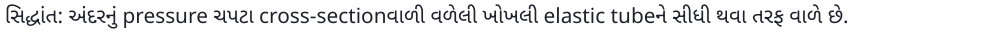
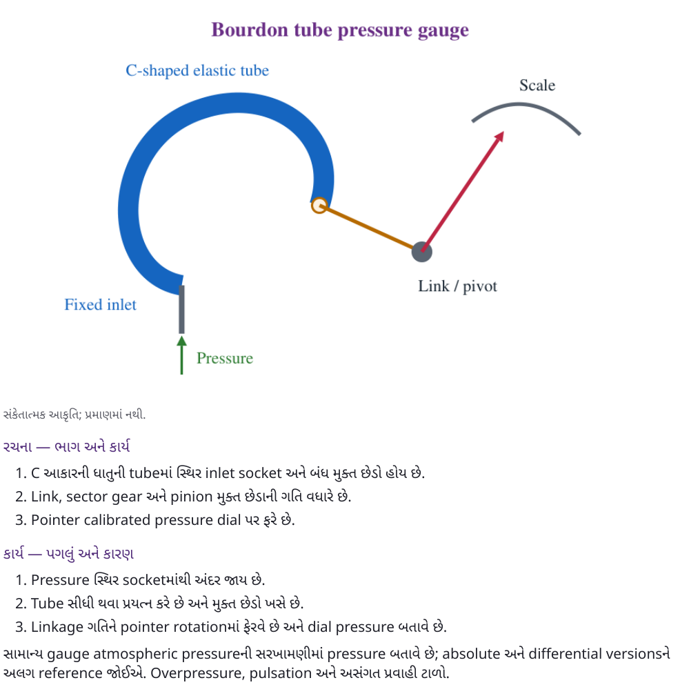
Q.3 (a) · Draw neat and clean torsion viscometer for viscosity measurement. · OR · 3 marks
A torsion viscometer suspends a cylinder in liquid by a torsion wire; the fluid damps its rotational swing.
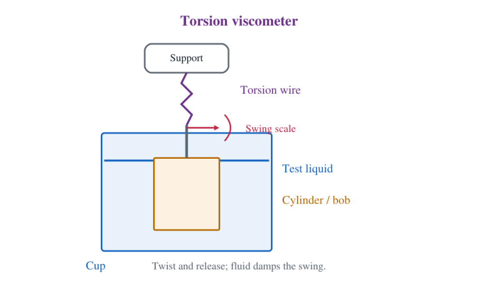
Schematic diagram, not to scale.
• Twist and release the system; use the calibrated swing or damping at a stated temperature to compare viscosity.
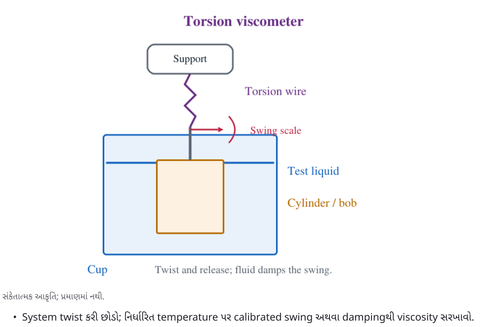
Q.3 (b) · Explain differential diaphragm pressure gauge. · OR · 4 marks
A differential diaphragm pressure gauge measures the pressure difference between two connected ports.
• A flexible diaphragm separates high- and low-pressure chambers. The difference in forces deflects it against an elastic element.
• A linkage or electrical transducer converts deflection to a calibrated ΔP indication. Equal pressures produce approximately zero differential.
• Use a suitable common-pressure rating, overrange protection and compatible wetted materials.
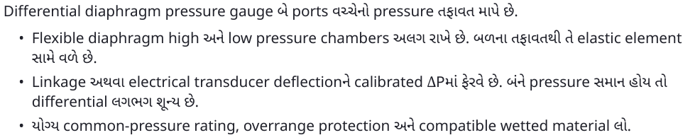
Q.3 (c) · Write principle, construction and working of dead weight pressure gauge. · OR · 7 marks
Principle: At equilibrium a known downward force on a piston balances fluid pressure over its

Schematic; not to scale.
Construction — part and purpose
1. A closely fitted vertical piston and cylinder contain a clean pressure fluid.
2. Known calibrated masses, including the piston mass, supply the force.
3. A hand pump and connections apply pressure to the gauge under test.
Working — step and reason
1. Choose the masses for the desired pressure and place them on the piston.
2. Pump fluid until the piston floats freely; rotate gently where the instrument procedure specifies to reduce friction.
3. Compute pressure from total force and effective area, compare the gauge reading, and repeat at several points.
Example: total mass 10 kg, effective area 1 cm² = 0.0001 m² and g = 9.81 m/s² give 981,000 Pa = 9.81 bar gauge approximately. Account for local gravity, buoyancy, area, fluid head and uncertainty as required; depressurize before disconnecting.
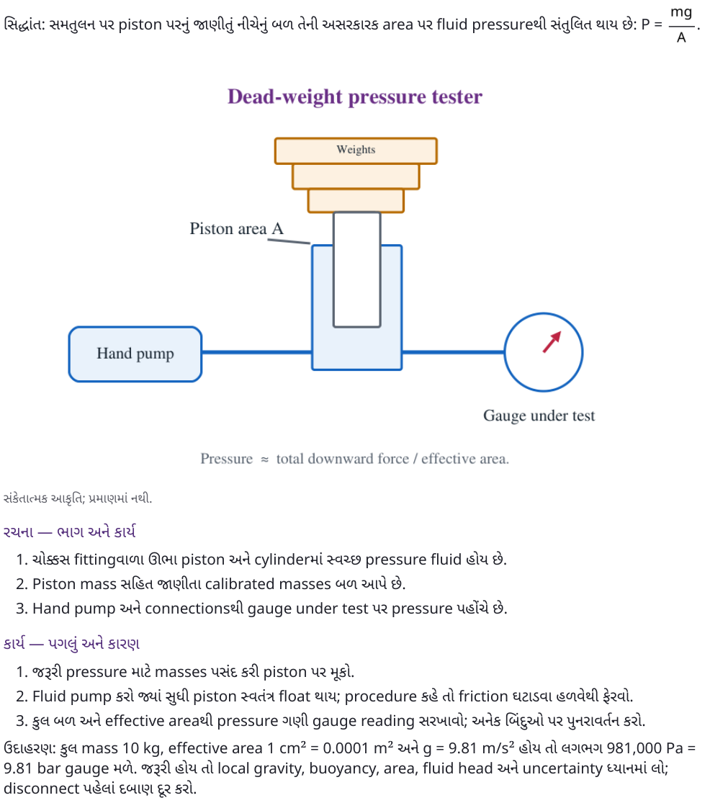
Question 4
Q4 · Flow and level
Q.4 (a) · Draw neat and clean target meter for flow measurement. · 3 marks
A target flow meter places a plate in the pipe and senses the drag force on it.
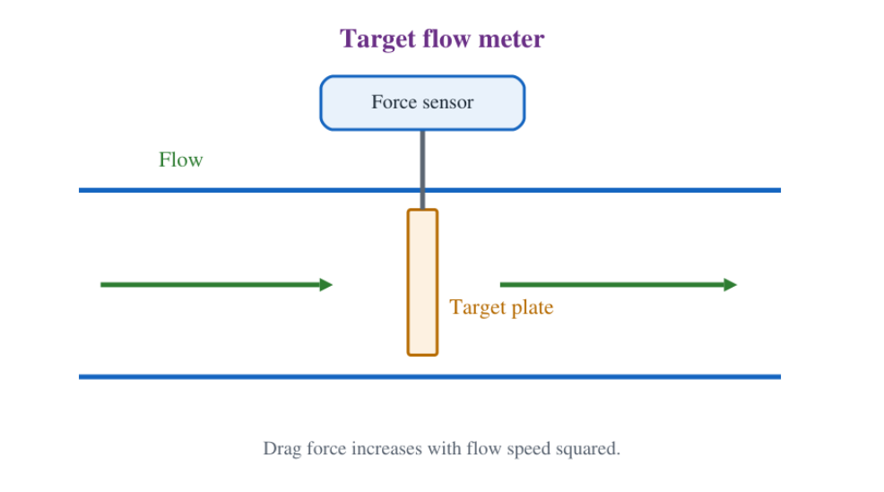
Schematic diagram, not to scale.
• The calibrated force sensor relates drag to flow under its specified fluid and installation conditions.
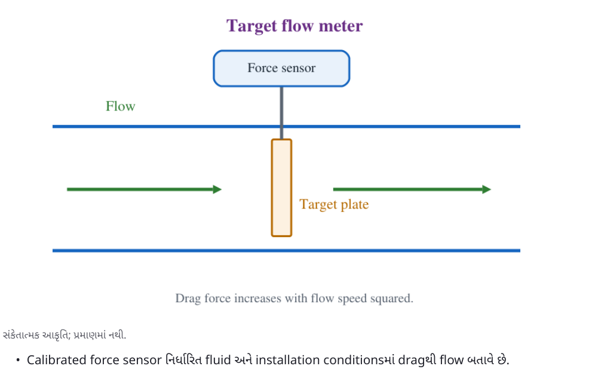
Q.4 (b) · Describe Probe and tape method for level measurement. · 4 marks
Principle: A graduated tape and probe directly locate the liquid surface relative to a known tank datum.

Schematic; not to scale.
Construction — part and purpose
1. A graduated tape on a reel carries a suitable weighted or contact probe.
2. A fixed reference point on the tank provides a repeatable measurement datum.
Working — step and reason
1. Lower a suitable electrical contact probe until it detects the surface. Alternatively lower a dip tape, withdraw it and inspect the wetted line.
2. Use the datum and calibrated tape to read the distance. For ullage, subtract surface-to-datum distance from the known datum-to-bottom height; for an innage tape read depth using its calibration.
Avoid measurement during turbulence; apply approved grounding and hazardous-area procedures for flammable liquids.
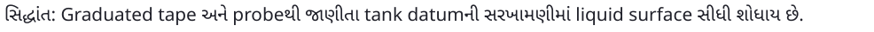

Q.4 (c) · Write principle, construction and working of air trap box method for level measurement. · 7 marks
Principle: In a vented tank, the pressure of trapped air in an inverted bell responds to hydrostatic head above its internal air–liquid interface.
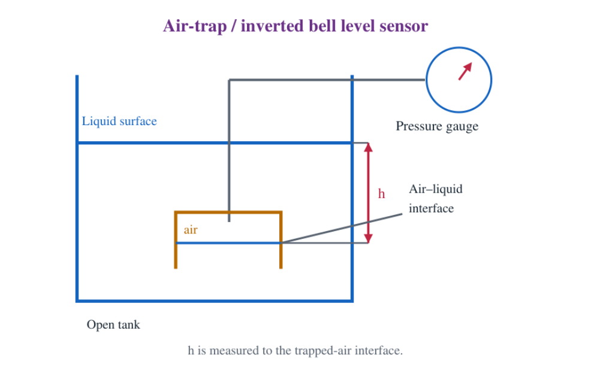
Schematic; not to scale.
Construction — part and purpose
1. An inverted open-bottom bell is fixed below the expected liquid level.
2. An airtight tube connects the trapped air space to a pressure gauge calibrated for level.
3. The bell geometry and datum are fixed so that compression and interface movement can be accounted for.
Working — step and reason
1. As level rises, liquid enters the open bell and compresses the trapped air.
2. At equilibrium air gauge pressure approximately equals ρgh, where h is measured from the external free surface to the internal air–liquid interface.
3. The calibrated pressure indication is converted to level; changes in density and interface position affect the relationship.
This is a trapped-air bell, not a continuously supplied bubbler. Leakage, dissolved gas and liquid entering the tube cause error; the simple relation assumes a vented tank and known density.
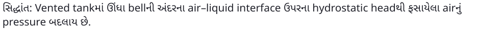
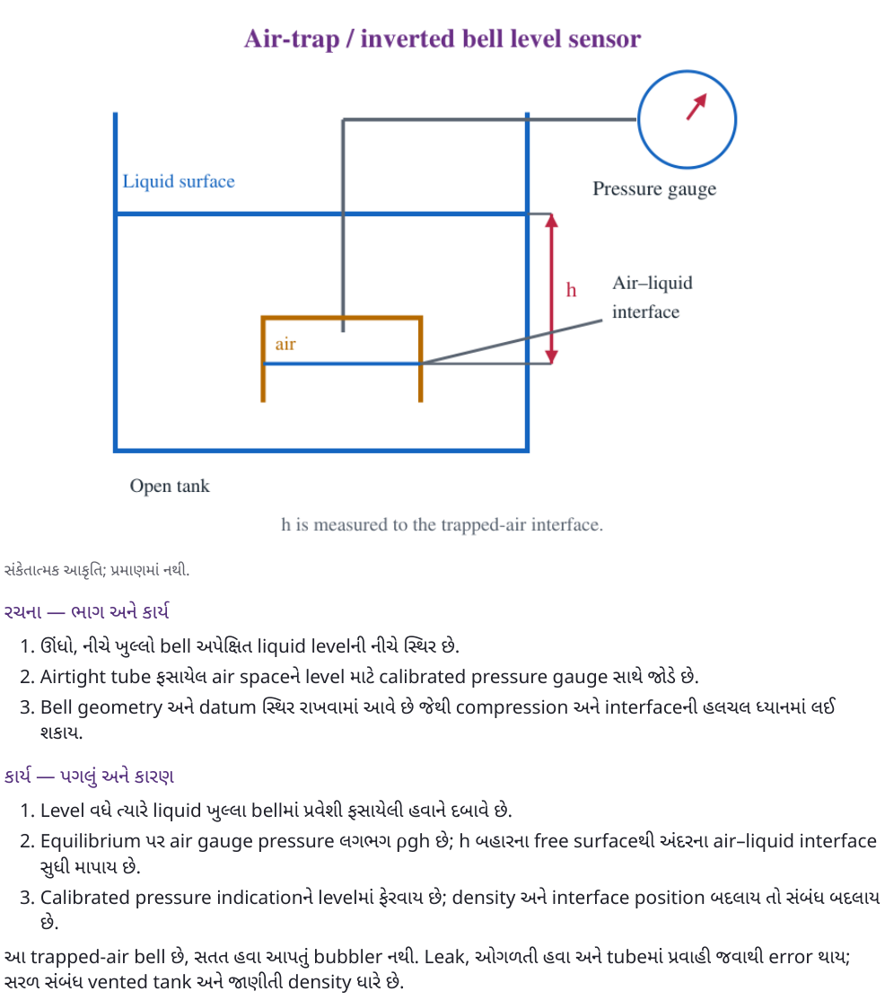
Q.4 (a) · Draw neat and clean vortex Shredding meter for flow measurement. · OR · 3 marks
A vortex shedding meter places a bluff body in the pipe; alternating vortices form downstream.
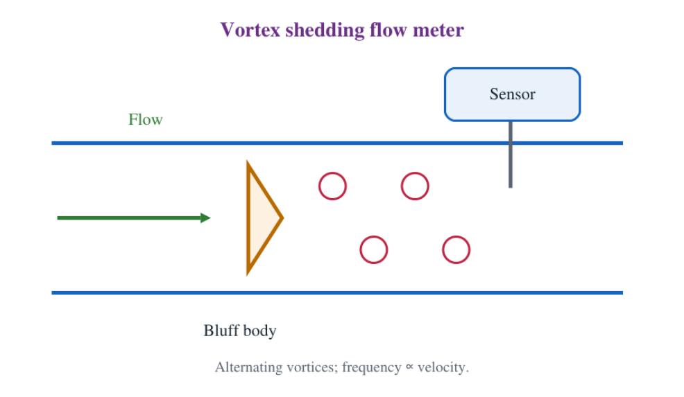
Schematic diagram, not to scale.
• A sensor measures shedding frequency, approximately proportional to velocity over its specified Reynolds-number range. The paper prints “vortex Shredding”.
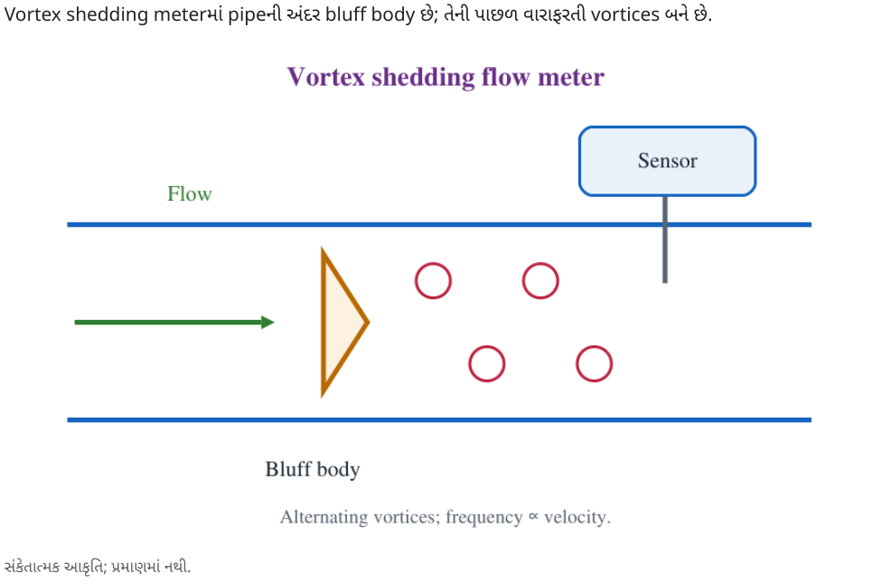
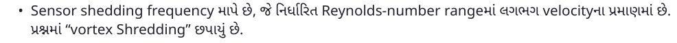
Q.4 (b) · Describe floats method for level measurement. · OR · 4 marks
A float level gauge follows the liquid surface by buoyancy.
• A float connected to a tape and pulley, magnetic coupling or transmitter moves as the level changes.
• The pointer or transmitter is calibrated in level units; select suitable float density and guide against turbulence.
• Sticky solids, fouling or changes in interface density can affect movement.
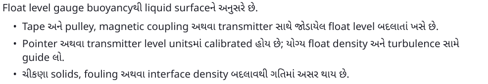
Q.4 (c) · Write principle, construction and working of diaphragm box method for level measurement. · OR · 7 marks
Principle: The hydrostatic pressure of liquid above a submerged diaphragm increases approximately as ρgh for a vented tank.
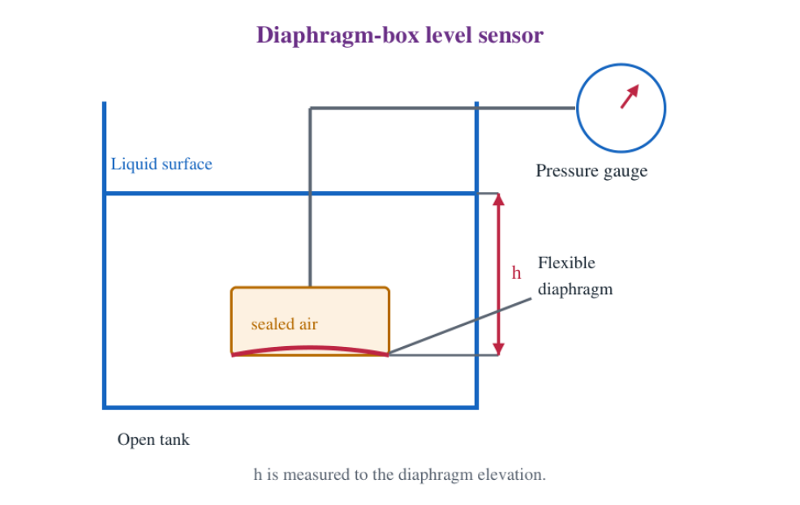
Schematic; not to scale.
Construction — part and purpose
1. A sealed air-filled box has a flexible, liquid-facing diaphragm.
2. A leak-tight tube connects the box to a pressure indicator calibrated in level units.
3. The box is fixed at a known datum below the measuring range.
Working — step and reason
1. Rising liquid head deflects the diaphragm and compresses the trapped air.
2. The air pressure is transmitted through the tube to the gauge.
3. With known liquid density and negligible diaphragm stiffness effect, the calibrated pressure indicates the liquid height above the diaphragm.
Keep the system airtight; leaks, diaphragm stiffness, density changes and gas dissolution introduce error. Closed tanks need compensation for vessel gas pressure.


Question 5
Q5 · Process control and automation
Q.5 (a) · Draw neat and clean control system with its Block diagram. · 3 marks
A closed-loop control system compares a measured process variable with the set point and adjusts a manipulated variable.
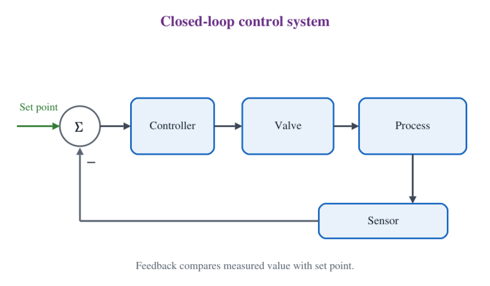
Schematic diagram, not to scale.
• The sensor feeds the measurement back; the controller acts through the final control element on the process.
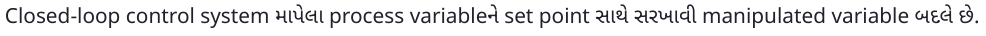
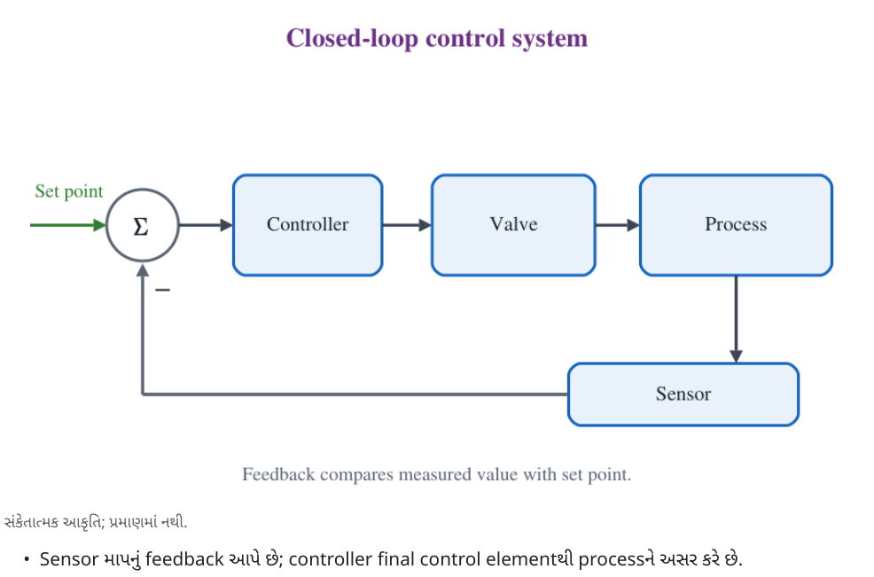
Q.5 (b) · Differentiate servo and regulatory control problem. · 4 marks
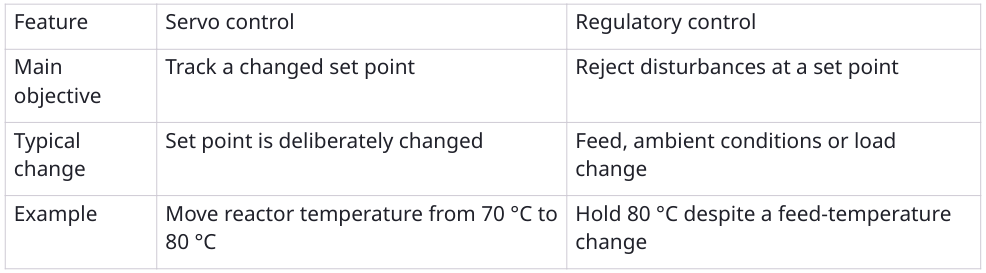
The same feedback loop can perform both jobs; neither guarantees perfect control.
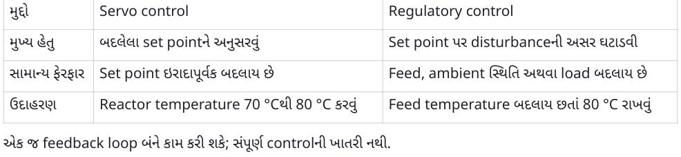
Q.5 (c) · List out various types of controllers and explain any two in details. · 7 marks
Common controllers include on–off, P, I, PI, PD and PID. Let e = set point − measured value and choose controller action for the process.
1. Proportional (P) controller
u = ubias + Kce
The output changes in proportion to present error. A constant load disturbance can leave a steady offset. Example: ubias = 50%, Kc = 2 and e = +2% gives u = 54%, before output limits.
2. Proportional–integral (PI) controller
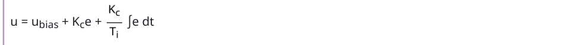
The proportional term responds immediately; the integral term accumulates error and can remove steady offset in a stable loop. Ti is integral time. Excessive integral action may cause oscillation or windup, so tune and use anti-windup and output limits.
Choose direct/reverse action to suit the valve and process. Interlocks and independent safety shutdowns are not replaced by the controller.

Q.5 (a) · Define: Set point, Disturbances, and Controlled variable. · OR · 3 marks
Set point (SP): desired value of a controlled variable, for example 80 °C reactor temperature.
• Controlled variable (PV): quantity measured and maintained near the set point, for example actual reactor temperature.
• Disturbance: an external change that affects the process, such as a change in inlet temperature, but is not the chosen manipulated input.
Q.5 (b) · Differentiate open loop and closed loop system · OR · 4 marks
![Q.5 (b) OR: preserved source formula, table or diagram, page 36. Extracted text context (formula notation may be incomplete): Feature Open loop Closed loop Feedback No measurement feedback to correct output Measured output is fed back and compared with SP Disturbances No automatic correction for unmeasured changes Corrective action follows measured deviation Example Heater runs on a fixed timer Thermostat controls heater from temperature Limit Simple but sensitive to load changes Needs sensor/tuning; instability is possible](winter-2025.assets/0062.webp)
A closed loop still has sensor, actuator and safety limits.
Q.5 (c) · Describe application area of SCADA, DCS, PLC. · OR · 7 marks
PLC, DCS and SCADA are related automation technologies; their functions can overlap.
PLC — programmable logic controller
• Machine sequences, conveyor interlocks, batch steps, motor and valve logic; can also perform analog control.
• Example: control a filling line using level switches and timed valve sequences.
DCS — distributed control system
• Coordinated, continuous plant control with distributed controllers, operator displays, alarms and history.
• Example: regulate flow, temperature and pressure across a refinery or chemical plant.
SCADA — supervisory control and data acquisition
• Collect and display remote data, alarms and trends; authorized supervisory commands may be sent through communications.
• Example: monitor geographically distributed water pumping stations or pipelines.
PLC/DCS may continue local control during loss of SCADA communications where designed; independent safety systems and access controls remain essential.